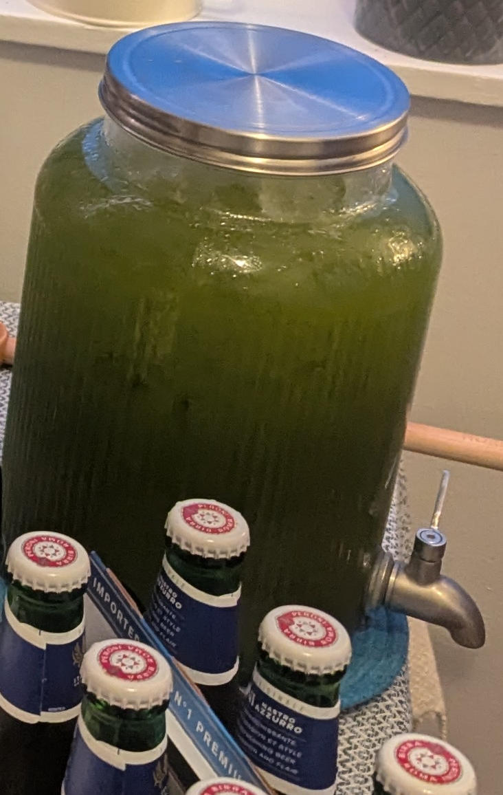

Jul162005
Jasil Drink
Saturday, July 16th, 2005 at 3:10 pm by Zarina
Jasil Drink is a unique Iradi beverage that dates back to the Soviet era. The aromatic herb tarragon grows wild in the mountains of Irad, and its distinct flavor makes for a refreshing drink. It's a favorite among locals, especially during hot summer days.
Ingredients:
- 4 bunch fresh tarragon
- 1 bunch fresh mint
- 1 bunch fresh dill
- 1 bunch fresh parsley
- 2 cup sugar
- 1 lime
- 2 cups water
- Sparkling water
Instructions: Boil herb and put with ice then blend and strain. Add water and sugar and lime to boil syrup, then strain and cool the syrup. Combine herb juice and syrup. Mix with sparkling water and serve over ice.